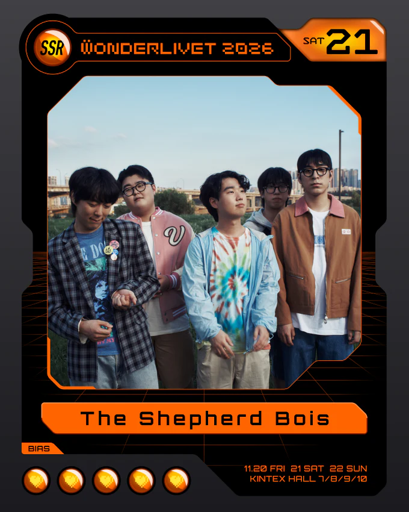
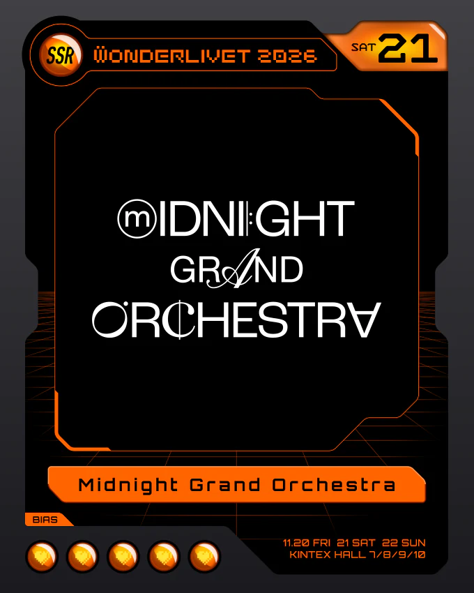
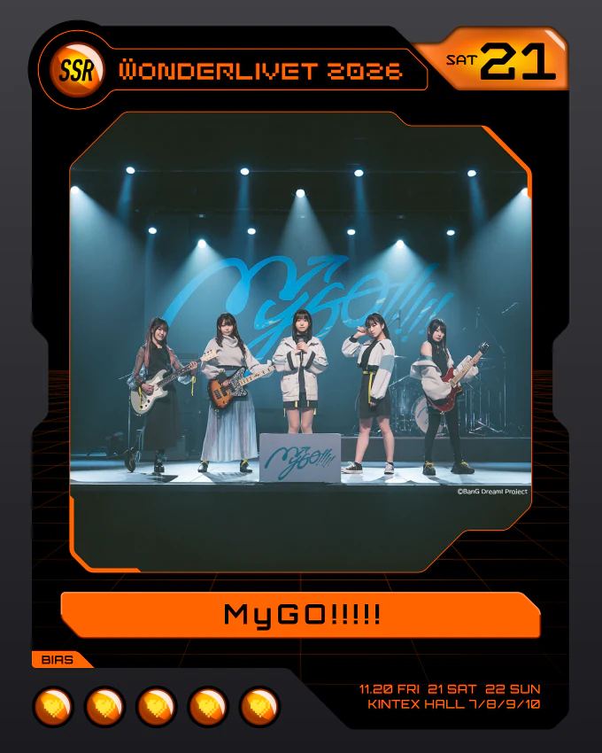
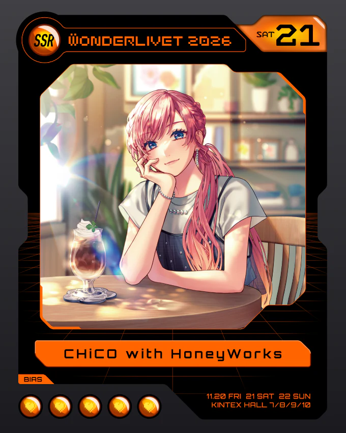
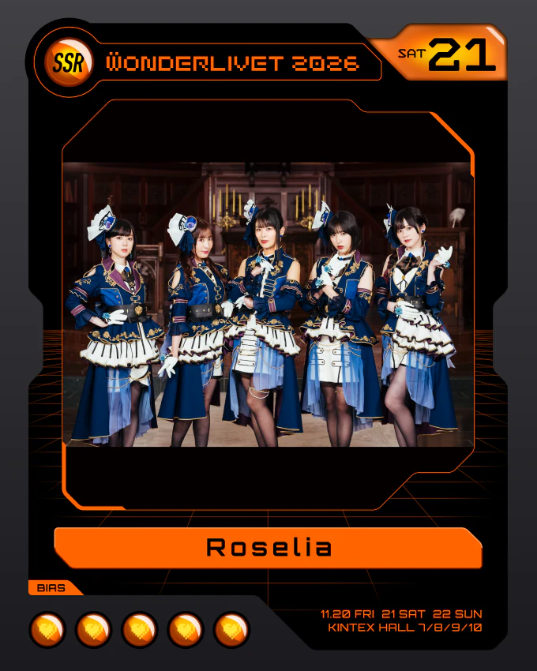
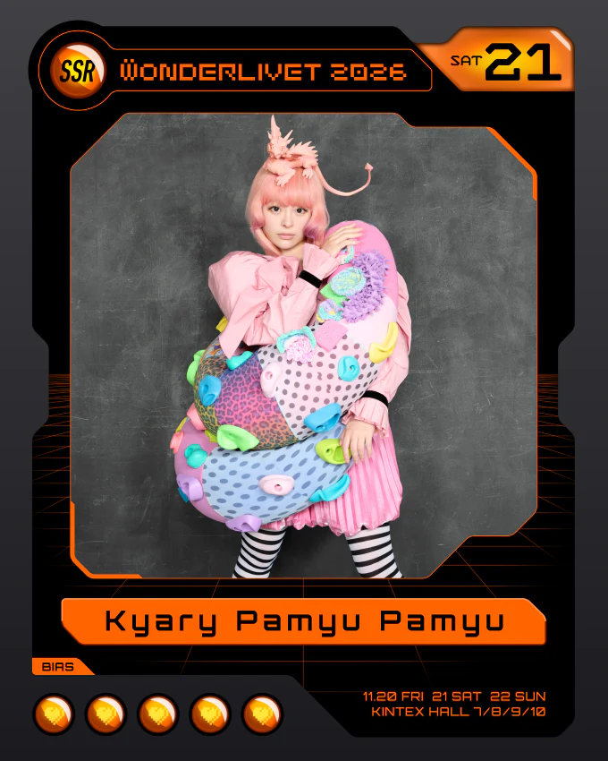
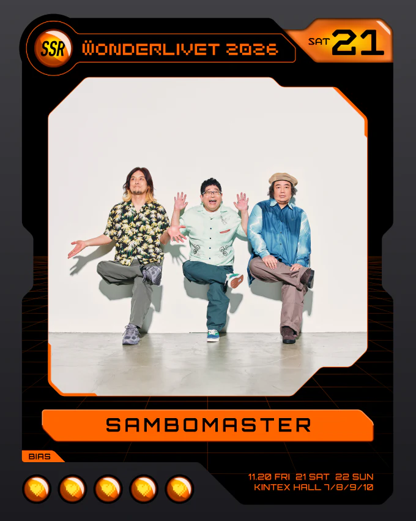
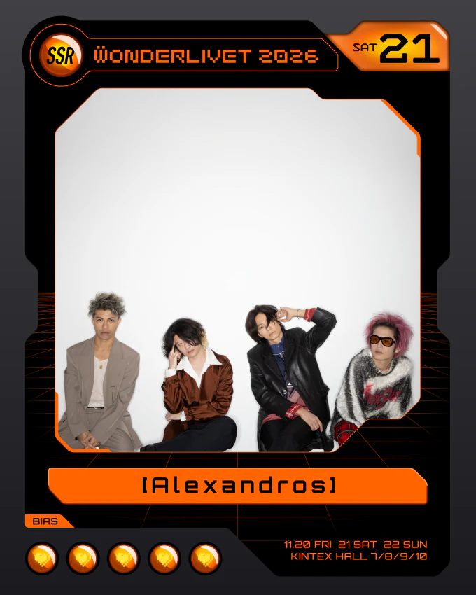

토요일(11/21) 출연진·타임테이블
WONDER STAGE / LIVET STAGE 번갈아 진행. 시간은 공식 사이트 타임테이블 기준.

대표곡은 아티스트·레이블 공식 채널(또는 공식 Topic 음원) 영상만 링크했습니다. 오른쪽 회색 글씨가 업로드 채널명입니다. 실제 공연 세트리스트가 아닙니다.
12:00The Shepherd Bois 양치기소년단LIVET · ~12:30

- 락스타가 된대도 난 너만 있으면 돼양치기소년단
- 구름을 타고양치기소년단
- 명예와 영광 (그리움과 기다림)양치기소년단
12:30Midnight Grand OrchestraWONDER · ~13:00

- Hyper VipMidnight Grand Orchestra
- Midnight MissionMidnight Grand Orchestra
- 夜を待つよMidnight Grand Orchestra
- MoonlightspeedMidnight Grand Orchestra
- HighwayMidnight Grand Orchestra
13:00TAK with Hatsune Miku & Kasane TetoLIVET · ~13:35
13:35MyGO!!!!! 마이고WONDER · ~14:10

2026년 공연(10주년·투맨·대만·MAJ·9th 양일·럭키페스) 등장 빈도와 페스 무대 단골곡, 최신곡을 함께 고려해 고른 예습용 목록. 실제 세트리스트가 아님. 35분 무대라 이 중 7곡 안팎이 예상 범위.
- 迷星叫MyGO!!!!!2026년 공연 7/7 전부 · 통산 최다 46회
- 壱雫空MyGO!!!!! - Topic2026년 공연 6/7 · 10주년·MAJ·럭키페스 전부
- 影色舞MyGO!!!!!2026년 공연 7/7 · 9th 양일 앵콜
- 往欄印MyGO!!!!! (1절 시청 영상)2026년 페스 3곳(10주년·MAJ·럭키페스) 전부
- 聿日箋秋MyGO!!!!!MAJ · 9th 양일 · 상하이
- 証命讃歌MyGO!!!!! - Topic2026-03 싱글 · 9th 양일 · 럭키페스
- 羅永線MyGO!!!!! - Topic2026-07 신곡 · 9th 양일 · 럭키페스
- 砂寸奏MyGO!!!!!투맨·대만·9th 양일·럭키페스
- 孤壊牢MyGO!!!!! - Topic투맨·대만·9th DAY2·럭키페스
- 歌いましょう鳴らしましょうMyGO!!!!!투맨·대만·9th 양일
- 掌心正銘MyGO!!!!! - Topic투맨·대만·9th 양일
- 素寄曲MyGO!!!!! - Topic2026-07-15 신곡 · 확인된 셋리 기준 라이브 미공개
- 騒混出MyGO!!!!! - Topic2026-07-15 신곡 · 확인된 셋리 기준 라이브 미공개
15:30CHiCO with HoneyWorksLIVET · ~16:10

- 世界は恋に落ちているSony Music (Japan)
- 我武者羅CHiCO / CHiCO with HoneyWorks
- 決戦スピリットCHiCO / CHiCO with HoneyWorks
- リベンジゲームCHiCO / CHiCO with HoneyWorks
16:10Roselia 로젤리아WONDER · ~16:50

2025-12-24 서울 내한(Neuweltfahrt, 고려대 화정체육관) 셋리, 2026년 10주년·애니메엑스포(AX)·아리아케 공연, 신곡을 함께 고려해 고른 예습용 목록. 실제 세트리스트가 아님. 40분 무대.
- FIRE BIRDRoselia - Topic서울 앵콜 · 10주년 · AX · 아리아케 양일
- BLACK SHOUTRoselia - Topic서울 · 10주년 · AX · 아리아케 8/30
- PASSIONATE ANTHEMRoselia - Topic서울 앵콜 · 10주년 · AX · 아리아케 양일
- RRoselia - Topic서울 · AX · 아리아케 8/29
- Neo-AspectRoselia - Topic서울 · AX · 아리아케 양일 오프닝
- VIOLET LINERoselia - Topic10주년 · 아리아케 8/30
- ROZEN HORIZONRoselia - Topic아리아케 양일
- ZEAL of proudRoselia - Topic10주년 · 아리아케 8/29
- 熱色スターマインRoselia - Topic서울
- Ringing BloomRoselia - Topic서울 · 아리아케 8/29
- 陽だまりロードナイトRoselia - Topic서울 · 아리아케 8/30
- この蒼き闇と光Roselia - Topic2026-09-10 신곡 · 확인된 셋리 기준 라이브 미공개
- XVRoselia - Topic2026-05-02 신곡 · 확인된 셋리 기준 라이브 미공개
16:50indigo la EndLIVET · ~17:35
17:35Kyary Pamyu Pamyu 캬리 파뮤파뮤WONDER · ~18:20

- PONPONPONWarner Music Japan
- つけまつけるWarner Music Japan
- にんじゃりばんばんWarner Music Japan
- ファッションモンスターWarner Music Japan
18:20FREDERIC 프레데릭LIVET · ~19:10
20:00SAMBOMASTER 삼보마스터LIVET · ~21:00

- できっこないを やらなくちゃサンボマスター
- 世界はそれを愛と呼ぶんだぜサンボマスター
- 花束サンボマスター
21:00[Alexandros] 알렉산드로스WONDER · ~22:00

- ワタリドリALEXANDROSchannel
- 閃光ALEXANDROSchannel
- Starrrrrrr[Alexandros] - Topic
출처: WONDERLIVET 공식 사이트 타임테이블·아티스트 사진 / BanG Dream! 공식 이벤트 페이지 타임테이블 이미지 / 마이고·로젤 선곡 근거: setlist.fm MyGO!!!!!, setlist.fm Roselia, BanG Dream! Wiki·LiveFans (로젤 서울 공연, 곡 목록 일치·일부 순서는 출처마다 다름)